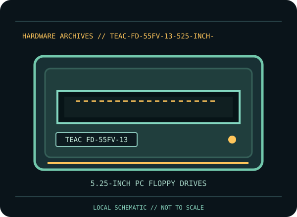

[ INDIVIDUAL COMPONENT // FLOPPY DRIVES ]
TEAC FD-55FV-13 5.25-inch Drive
This record identifies a documented physical floppy drive, controller, or preservation interface. It separates confirmed model facts from details that vary by suffix, board revision, host, media and configuration.

IDENTIFICATION NOTE: Match the full model/part number, revision, connector and manual before use. Similar family names do not establish interchangeable mechanics or host compatibility.
Model specifications
| Catalog subcategory | 5.25-inch PC floppy drives |
|---|---|
| Exact model / family | TEAC FD-55FV-13 |
| Era / product family | TEAC FD-55F double-sided 96-TPI family |
| Documented characteristics | 5.25-inch, double-sided, 96-track-per-inch FD-55F family drive; TEAC’s revision-E specification identifies the FD-55FV-13. Do not infer a formatted capacity or recording rate from the family name alone; use the complete spec and host controller configuration. |
| Interface / connectors | The manufacturer specification is the governing source for connector pinout, power and jumper settings. Confirm those details against the unit label/revision before attaching a standard PC 34-pin cable; family members may have different options. |
| Host and media compatibility | The 96-TPI mechanism is not equivalent to a 40-TPI 5.25-inch drive. Host format depends on controller, data rate, motor speed, stepping, drive select, media and alignment; the exact FD-55FV-13 options should be matched to the system manual. |
Model-specific compatibility checks
- Identify the complete model/suffix, board revision, serial/date codes and connector arrangement from the physical unit; photograph all labels before installation.
- The 96-TPI mechanism is not equivalent to a 40-TPI 5.25-inch drive. Host format depends on controller, data rate, motor speed, stepping, drive select, media and alignment; the exact FD-55FV-13 options should be matched to the system manual.
- Confirm the host controller, drive wiring, power, drive select, termination, media density and recording format against the cited model documentation. Do not infer a fit or capacity solely from the drive size or connector shape.
Preservation and service notes
Use the FD-55F instruction and maintenance manuals for mechanical adjustment and cleaning. Verify the exact -13 suffix, jumpers and head alignment before transfer. Avoid bulk erasing or repeated reads of suspect media; capture a known-good reference disk before any adjustment.
Keep original media and raw captures intact. Log the exact drive/controller/software configuration, acquisition date, condition and any service performed; checksum verified copies before creating derivatives.
Manufacturer documentation & sources
- TEAC — FD-55FV-13 Specification, Revision EModel-specific TEAC specification scan for the FD-55FV-13; consult the stated revision for connector and configuration details.
- TEAC — FD-55 Series Maintenance Manual (1985)Manufacturer service reference for FD-55 family maintenance; verify applicability to exact model/revision.
Sources are model-specific manufacturer documentation or archival copies of the original source. Where a document covers a family or multiple revisions, confirm its applicability to the exact unit before using an electrical or service specification.